R> Rows: 200,382
R> Columns: 8
R> $ lat <dbl> -44.5, -44.5, -44.5, -44.5, -44.5, -44.5, -44.5, -44.5, -44.5…
R> $ lon <dbl> 6.5, 7.5, 9.5, 12.5, 14.5, 15.5, 19.5, 20.5, 22.5, 24.5, 26.5…
R> $ depth_m <dbl> 0, 0, 0, 0, 0, 0, 0, 0, 0, 0, 0, 0, 0, 0, 0, 0, 0, 0, 0, 0, 0…
R> $ value <dbl> NA, 295.308, 295.840, NA, 280.251, NA, 270.377, 270.764, 289.…
R> $ month <dbl> 0, 0, 0, 0, 0, 0, 0, 0, 0, 0, 0, 0, 0, 0, 0, 0, 0, 0, 0, 0, 0…
R> $ variable <chr> "dissolved_oxygen", "dissolved_oxygen", "dissolved_oxygen", "…
R> $ unit <chr> "umol/kg", "umol/kg", "umol/kg", "umol/kg", "umol/kg", "umol/…
R> $ source <chr> "WOA18 decav 1.00° CSV", "WOA18 decav 1.00° CSV", "WOA18 deca…11. Brewing Colours
Smit, A. J. ![]()


“Microbiology and meteorology now explain what only a few centuries ago was considered sufficient cause to burn women to death.”
— Carl Sagan
“Knowledge is not a resource we simply stumble upon. It’s not something that we pluck out of the air. Knowledge is created. It is coaxed into existence by thoughtful, creative people. It is not a free good. It comes only to the prepared mind.”
— Frank H. T. Rhodes
Now that you have seen the basics of ggplot2, let us take a moment to delve further into the beauty of our figures. It may sound vain at first, but the colour palette of a figure is actually very important. This is for two main reasons. The first being that a consistent colour palette looks more professional. But most importantly it is necessary to have a good colour palette because it makes the information in our figures easier to understand. The communication of information to others is central to good science.
Before we touch the tools, note the following: colour can encode magnitude or category. If the variable is numeric and ordered, use a continuous scale that shows gradients. If the variable is categorical, use a discrete scale that separates groups. Everything that follows is an application of this single decision.
NoteColour Scale Decision Tree
- Is the variable ordered with meaningful distance?
Yes → use a continuous scale.
No → use a discrete scale. - Is there a meaningful midpoint (e.g. above vs below zero)?
Yes → use a diverging palette.
No → use a sequential palette. - How many categories do you need to distinguish?
More categories require more separable hues — keep the legend visible.
WarningAccessibility and Reproducibility
Colour choices are part of your evidence. Aim for palettes that remain legible for colour‑blind viewers and print well in greyscale. Keep your palette definitions in code so others can reproduce the exact mapping.
1 R Data (Choosing a Dataset for Colour)
This chapter is about colour, so we need a dataset where colour matters.
For SAMOS, we will use the WOA18 core dataset because oceanographic variables are inherently spatial and gradients are often the point of the figure.
NoteAbout the dataset used in this chapter (World Ocean Atlas 2018)
In this chapter we use a small, tidy extract of World Ocean Atlas 2018 (WOA18) climatologies for the broader Southern Africa region.
Why WOA matters in ocean science:
- Temperature and salinity are the fundamental state variables of seawater, and together shape density and stratification.
- Dissolved oxygen is a key indicator of ventilation, productivity, and habitat suitability.
- Nutrients (nitrate, phosphate, silicate) constrain primary production and structure ecosystems.
These variables are not “just numbers”: they encode the physical and biogeochemical structure of the ocean.
TipData dictionary
See: data/SAMOS/processed/woa18_sa_core_1deg_monthly_DICTIONARY.md
We will use:
- a continuous variable (e.g. temperature or dissolved oxygen) to demonstrate continuous palettes;
- a categorical variable (e.g. depth bin) to demonstrate discrete palettes.
# To create a list of ALL available data
# Not really recommended as the output is overwhelming
data(package = .packages(all.available = TRUE))
# To look for datasets within a single known package
# type the name of the package followed by '::'
# This tells R you want to look in the specified package
# When the autocomplete bubble comes up you may scroll
# through it with the up and down arrows
# Look for objects that have a mini spreadsheet icon
# These are the datasets
# Try typing the following code and see what happens...
datasets::You have an amazing amount of data available to you. So the challenge is not to find a dataframe that works for you, but to just decide on one. My preferred method is to read the short descriptions of the dataframes, pick the one that sounds the funniest. But please use whatever method makes the most sense to you. One note of caution and in R there are generally two different forms of data: wide OR long. You will see in detail what this means on Day 4, and what to do about it. For now you need to know that ggplot2 works much better with long data. To look at a dataframe of interest, you use the same method you would use to look up a help file for a function.
We start with a continuous colour scale. Below we map dissolved oxygen (continuous) to colour in a temperature–salinity plot (surface February climatology).
woa %>%
filter(month == 2, depth_m == 0, variable %in% c("temperature", "salinity", "dissolved_oxygen")) %>%
select(lon, lat, variable, value) %>%
pivot_wider(names_from = variable, values_from = value) %>%
ggplot(aes(x = salinity, y = temperature)) +
geom_point(aes(colour = dissolved_oxygen), alpha = 0.65, size = 0.8) +
scale_colour_viridis_c(name = "Oxygen (µmol/kg)") +
labs(x = "Salinity (PSU)", y = "Temperature (°C)")
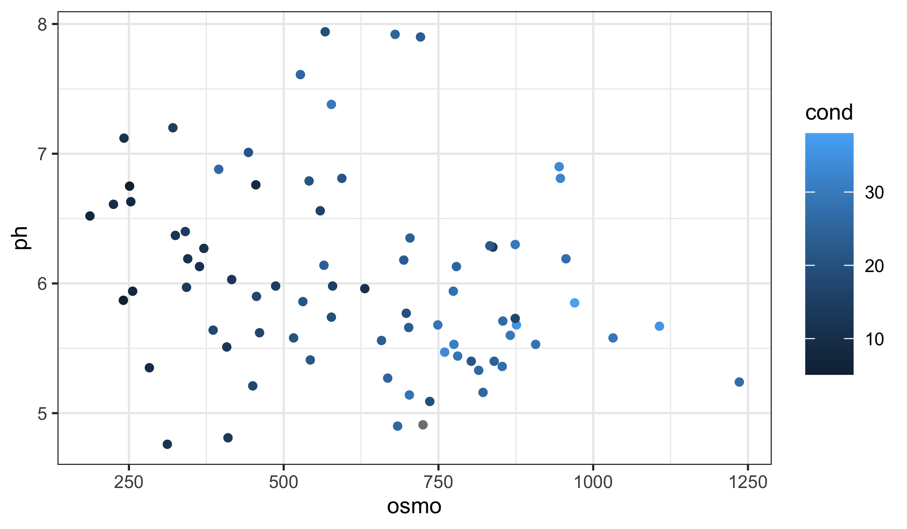
What is important to note here is that the colour scale is continuous. How can we know this by looking at the figure? Look for a smooth gradient (ordered transitions) and a bar-like legend rather than separate keys.
Rule of thumb: if your variable has a meaningful order and distance, treat it as continuous; otherwise treat it as discrete.
Now we use a discrete variable for colouring. We do this by converting depth to a factor (categorical bins).
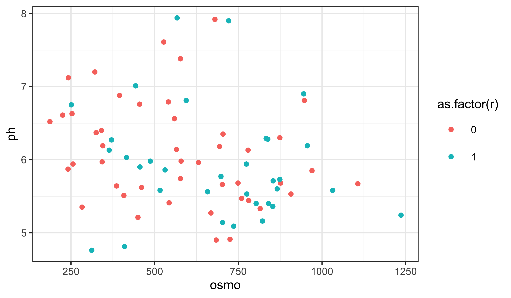
What is the first thing you notice about the difference in the colours? Notice the distinct hues and the key-style legend (one swatch per category).
WarningBad Colour Choices (and Why They Fail)
- Categorical data shown with a gradient → implies a false order.
- Ordered magnitudes shown with random hues → hides trends and distances.
- Too many categories in one palette → colours become indistinguishable and the legend stops working.
2 RColorBrewer
Central to the purpose of ggplot2 is the creation of beautiful figures. For this reason there are many built in functions that you may use in order to have precise control over the colours, as well as additional packages that extend your options even further. The RColorBrewer package should have been installed on your computer, activated automatically when you installed and activated the tidyverse. You will use this package for its colour palettes.
RColorBrewer groups palettes by purpose: sequential (magnitude), diverging (deviation from a midpoint), and qualitative (categories). This matters more than style. Also remember that some palettes are not colour-blind safe and may not reproduce well in print. When in doubt, favour clarity over prettiness.
In ggplot2, scale functions are the bridge between data and appearance. To this end, scale_colour_*() tells ggplot how to translate values into colours. Let us modify and pretty-up the previous continuous colour scale figure now.
NoteScale Functions (Quick Map)
- Continuous:
scale_colour_gradient(),scale_colour_gradientn(),scale_colour_distiller() - Discrete:
scale_colour_brewer(),scale_colour_manual() - Fill versions: replace
colourwithfill(e.g.scale_fill_brewer()). Think of these as a family of translators between data and appearance.
woa %>%
filter(month == 2, depth_m == 0, variable %in% c("temperature", "salinity", "dissolved_oxygen")) %>%
select(lon, lat, variable, value) %>%
pivot_wider(names_from = variable, values_from = value) %>%
ggplot(aes(x = salinity, y = temperature)) +
geom_point(aes(colour = dissolved_oxygen), alpha = 0.65, size = 0.8) +
scale_colour_distiller(palette = "YlGnBu", name = "Oxygen (µmol/kg)") +
labs(x = "Salinity (PSU)", y = "Temperature (°C)")
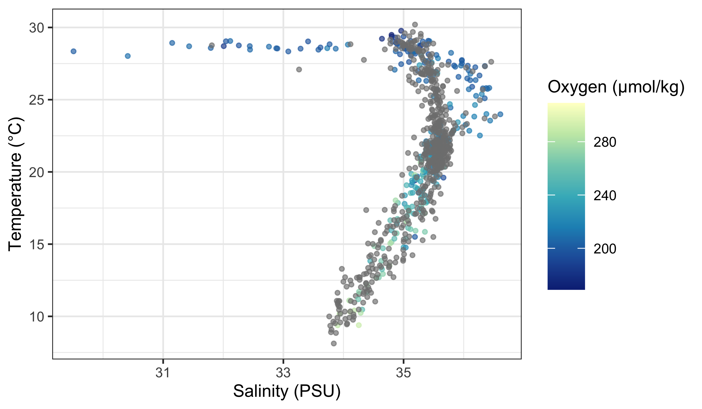
Does this look different? If so, how? The second page of the colour cheat sheet we included in the course material shows some different colour brewer palettes. Let us look at how to use those here.
woa %>%
filter(month == 2, depth_m == 0, variable %in% c("temperature", "salinity", "dissolved_oxygen")) %>%
select(lon, lat, variable, value) %>%
pivot_wider(names_from = variable, values_from = value) %>%
ggplot(aes(x = salinity, y = temperature)) +
geom_point(aes(colour = dissolved_oxygen), alpha = 0.65, size = 0.8) +
scale_colour_distiller(palette = "Spectral", name = "Oxygen (µmol/kg)") +
labs(x = "Salinity (PSU)", y = "Temperature (°C)")
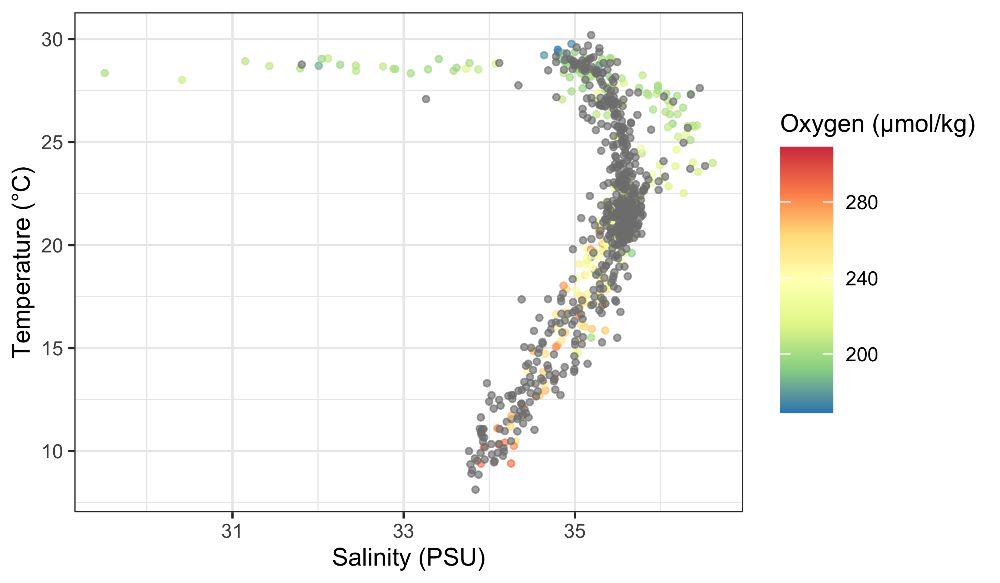
Does that help you to see a pattern in the data? What do you see? Does it look like there are any significant relationships here? How would you test that?
If you want to use RColorBrewer with a discrete variable, you use a slightly different function.
woa %>%
filter(month == 2, variable == "temperature", depth_m %in% c(0, 50, 100, 200, 500)) %>%
ggplot(aes(x = lat, y = value)) +
geom_point(aes(colour = factor(depth_m)), alpha = 0.35, size = 0.7) +
scale_colour_brewer(palette = "Set1", name = "Depth (m)") +
labs(x = "Latitude (°N)", y = "Temperature (°C)")
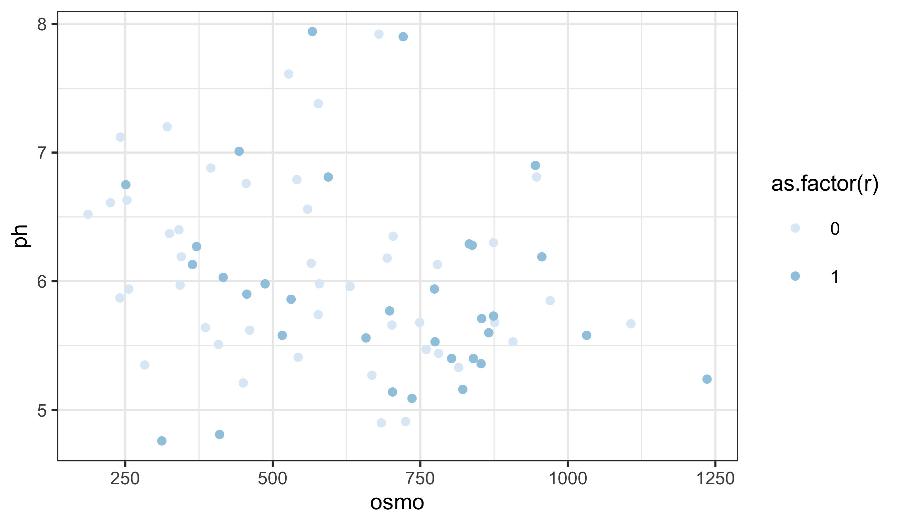
The default colour scale here is not helpful at all. So let us pick a better one. If you look at our cheat sheet you will see a list of different continuous and discrete colour scales. All you need to do is copy and paste one of these names into your colour brewer function with inverted commas.
woa %>%
filter(month == 2, variable == "temperature", depth_m %in% c(0, 50, 100, 200, 500)) %>%
ggplot(aes(x = lat, y = value)) +
geom_point(aes(colour = factor(depth_m)), alpha = 0.35, size = 0.7) +
scale_colour_brewer(palette = "Dark2", name = "Depth (m)") +
labs(x = "Latitude (°N)", y = "Temperature (°C)")
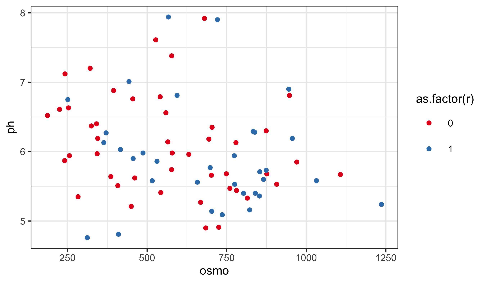
Notice the pattern: scale_colour_distiller() is typically used for continuous variables, while scale_colour_brewer() is typically used for discrete variables. They are not interchangeable because they encode different kinds of meaning.
WarningA Common Misuse
Using a continuous palette for categorical data suggests a false order. Using a discrete palette for ordered magnitudes hides gradients. If the palette and the data type do not match, the figure becomes misleading.
3 Worked Examples With a New Dataset (Iris)
Let us reinforce the ideas using a fresh dataset. The built-in iris data give us both continuous variables (e.g. petal length) and categories (species), which makes it perfect for colour decisions.
# Load data
iris_df <- datasets::iris
# Continuous colour: petal length (magnitude)
ggplot(data = iris_df, aes(x = Sepal.Length, y = Sepal.Width)) +
geom_point(aes(colour = Petal.Length)) +
labs(x = "Sepal length", y = "Sepal width", colour = "Petal length") +
scale_colour_distiller(palette = "YlGnBu")
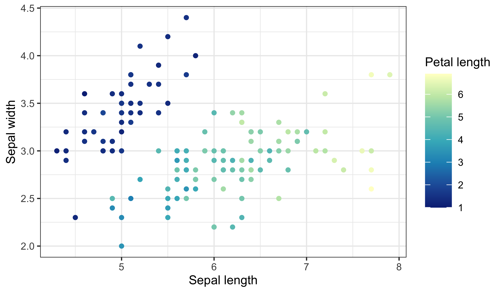
Notice the smooth gradient and the bar-style legend — this signals an ordered, numeric scale. If you want to emphasise departures above and below a midpoint, use a diverging palette:

Now compare a discrete scale where colour represents species (categories):
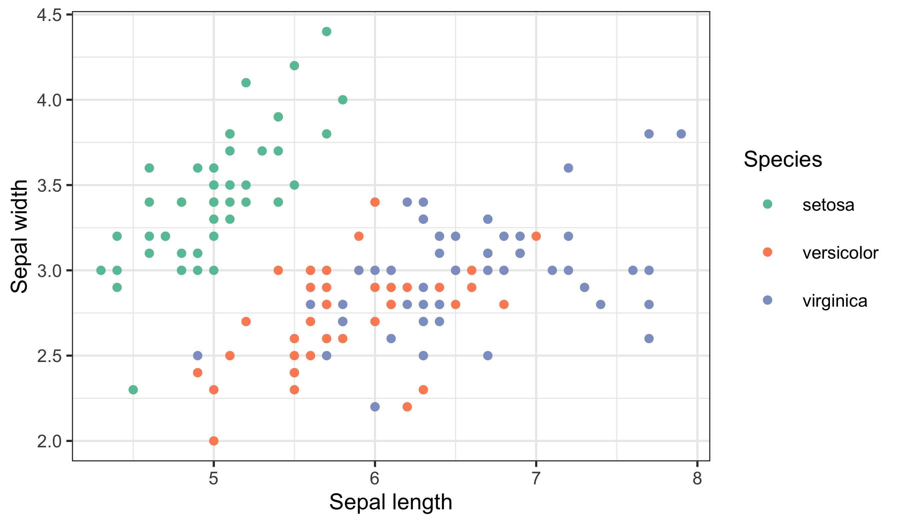
Finally, here is a bad choice and the fix. A continuous palette for species implies ordering that does not exist:


The rule remains the same: match the data type to the scale type, and make the legend explain the mapping.
4 Make Your Own Palettes
This is all well and good. But did not I claim that this should give you complete control over our colours? So far it looks like it has just given you a few more palettes to use. And that is nice, but it is not “infinite choices”. That is where the Internet comes to your rescue. There are many places you may go to for support in this regard. The following links, in descending order, are very useful. And fun!
- http://tristen.ca/hcl-picker/#/hlc/6/0.95/48B4B6/345363
- http://tools.medialab.sciences-po.fr/iwanthue/index.php
- http://jsfiddle.net/d6wXV/6/embedded/result/
I find the first link the easiest to use. But the second and third links are better at generating discrete colour palettes. Take several minutes playing with the different websites and decide for yourself which one(s) you like.
5 Use Your Own Palettes
Before you commit to a custom palette, run a quick checklist:
- How many categories do you need to distinguish?
- Is there a meaningful order or magnitude?
- Who is your audience, and will this be printed or viewed on screen?
- Do the legend labels and title communicate what the colours mean?
Now that you have had some time to play around with the colour generators let us look at how to use them with our figures. I have used the first web link to create a list of five colours. I then copy and pasted them into the code below, separating them with commas, placing them inside of c() and inverted commas. Be certain that you insert commas and inverted commas as necessary or you will get errors. Note also that you are using a new function to use our custom palette.
woa %>%
filter(month == 2, depth_m == 0, variable %in% c("temperature", "salinity", "dissolved_oxygen")) %>%
select(lon, lat, variable, value) %>%
pivot_wider(names_from = variable, values_from = value) %>%
ggplot(aes(x = salinity, y = temperature)) +
geom_point(aes(colour = dissolved_oxygen), alpha = 0.65, size = 0.8) +
scale_colour_gradientn(
colours = c("#A5A94D", "#6FB16F", "#45B19B", "#59A9BE", "#9699C4", "#CA86AD"),
name = "Oxygen (µmol/kg)"
) +
labs(x = "Salinity (PSU)", y = "Temperature (°C)")
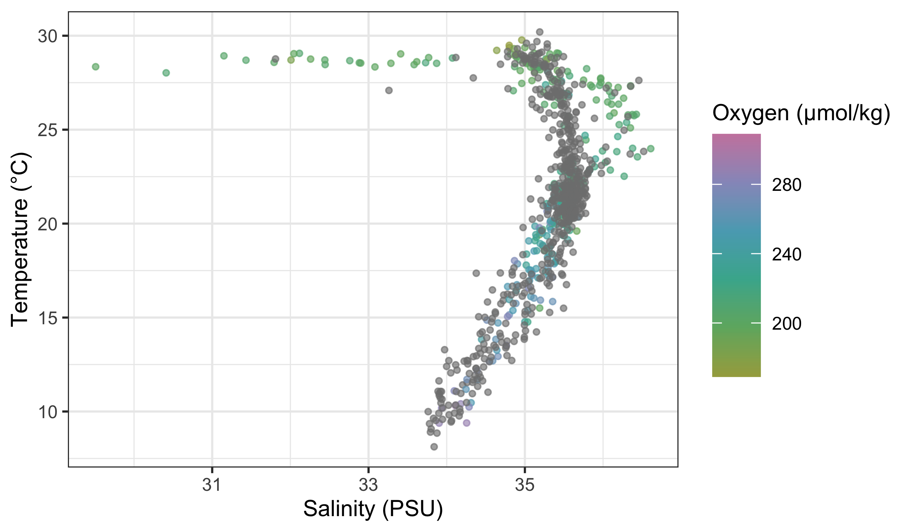
To use your custom colour palettes with a discrete colour scale, you use a different function as seen in the code below. While you are at it, also see how to correct the title of the legend, its text labels. Sometimes the default output is not what you want for our final figure and especially if you are going to be publishing it. Also note in the following code chunk that rather than using hexadecimal character strings to represent colours in your custom palette, you are simply writing in the human name for the colours you want. This will work for the continuous colour palettes above, too.
woa %>%
filter(month == 2, variable == "temperature", depth_m %in% c(0, 50, 100, 200, 500)) %>%
mutate(depth_bin = factor(depth_m)) %>%
ggplot(aes(x = lat, y = value)) +
geom_point(aes(colour = depth_bin), alpha = 0.35, size = 0.7) +
scale_colour_manual(
values = c("0" = "navy", "50" = "dodgerblue3", "100" = "turquoise4", "200" = "goldenrod2", "500" = "firebrick3"),
labels = c("0" = "0 m", "50" = "50 m", "100" = "100 m", "200" = "200 m", "500" = "500 m")
) +
labs(x = "Latitude (°N)", y = "Temperature (°C)", colour = "Depth")
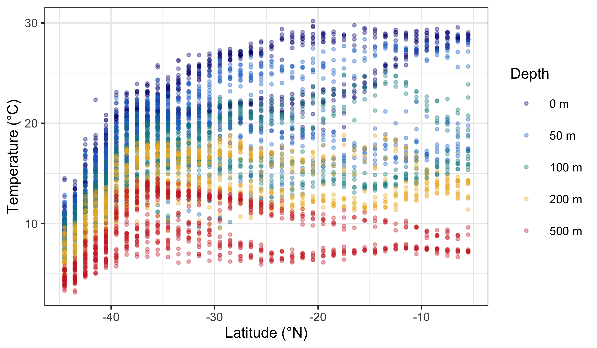
NotePalette Length and Meaning
For discrete palettes, the number of colours should match the number of categories. For continuous palettes, colours should change smoothly and monotonically. Also consider cultural or semantic associations (e.g., red for danger), especially if your audience is non-technical.
So now you have seen how to control the colour palettes in your figures. I know it is a bit much. Four new functions just to change some colours! That is a bummer. Do not forget that one of the main benefits of R is that all of your code is written down, annotated, saved. You do not need to remember which button to click to change the colours and you just need to remember where you saved the code that you will need. And that is pretty great in my opinion.
6 Worked Examples With the colorspace Package
Let us add one more worked example using the colorspace package. It is useful because it provides palettes that are designed to be perceptually uniform and more robust for colour‑blind viewing and print. The dataset below (mtcars) gives us a continuous variable (horsepower) and a categorical variable (number of cylinders).
# Load libraries
library(colorspace)
# Load data
cars_df <- datasets::mtcars
# Continuous colour: horsepower (magnitude)
ggplot(data = cars_df, aes(x = wt, y = mpg)) +
geom_point(aes(colour = hp)) +
labs(x = "Weight", y = "Fuel efficiency (mpg)", colour = "Horsepower") +
scale_colour_continuous_sequential(palette = "BluGrn")
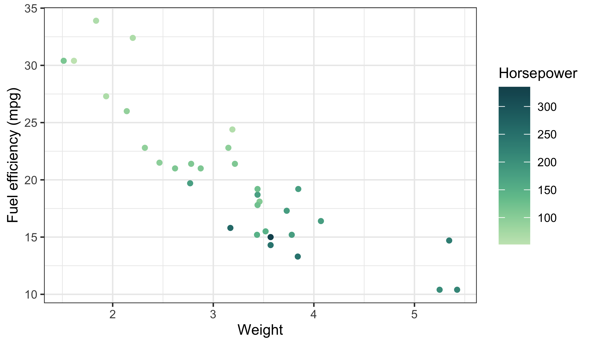
Here the sequential palette reinforces magnitude (low → high) without sudden jumps. Now map a categorical variable with a qualitative palette:

Notice the legend structure again: a continuous bar for horsepower and discrete keys for cylinders. This is the same diagnostic pattern we used earlier.
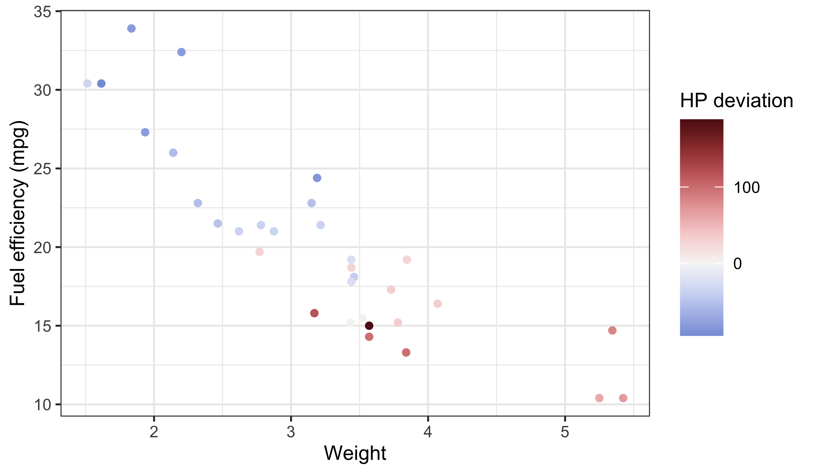
Use diverging palettes when the midpoint is meaningful (e.g. above vs below average). If the midpoint is not meaningful, use a sequential palette instead.
ImportantDo This Now
Today we learned the basics of ggplot2, how to facet, how to brew colours, and how to plot some basic summary statistics. Sjog, that is a lot of stuff to remember… which is why we will now spend the rest of Day 3 putting our new found skills to use.
Please group up as you see fit to produce your very own ggplot2 figures. We have not yet learned how to manipulate/tidy up our data so it may be challenging to grab any ol’ dataset and make a plan with it. But try! Explore some of the other built-in datasets and find two or three you like. Or use your own data!
The goal by the end of today is to have created four figures and join them together via faceting and the options offered by ggarrange(). We will be walking the room to help with any issues that may arise.
Success criteria:
- At least one figure uses a continuous colour scale and one uses a discrete scale.
- Legends are correctly titled and interpretable.
- Colour choices match the data type (no false ordering).
- The grid or facet layout helps comparison rather than obscures it.
Citation
BibTeX citation:
@online{a._j.2021,
author = {A. J. , Smit},
title = {11. {Brewing} {Colours}},
date = {2021-01-01},
url = {http://samos-r.netlify.app/intro_r/08-brewing.html},
langid = {en}
}
For attribution, please cite this work as:
A. J. S (2021) 11. Brewing Colours. http://samos-r.netlify.app/intro_r/08-brewing.html.